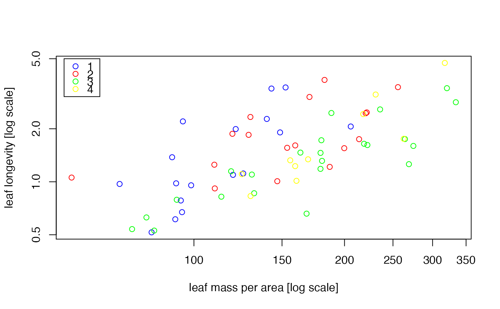

slope.com.RdTest if several major axis or standardised major axis lines share a common slope. This can now be done via sma(y~x*groups), see help on the sma function.
slope.com(y, x, groups, method = 'SMA', alpha = 0.05, data = NULL, intercept = TRUE, robust=FALSE, V = array(0, c(2, 2, length(unique(groups)))), group.names = sort(unique(groups)), ci = TRUE, bs = TRUE, slope.test=NULL)
| y | The Y-variable for all observations (as a vector) |
|---|---|
| x | The X-variable for all observations (as a vector) |
| groups | Coding variable identifying which group each observation belongs to (as a factor or vector) |
| method | The line fitting method:
|
| alpha | The desired confidence level for the 100(1-alpha)% confidence interval for the common slope. (Default value is 0.05, which returns a 95% confidence interval.) |
| data | Deprecated. Use with() instead (see Examples). |
| intercept | (logical) Whether or not the line includes an intercept.
|
| robust | If TRUE, uses a robust method to fit the lines and construct the test statistic. |
| V | The estimated variance matrices of measurement error, for each group. This is a 3-dimensional array with measurement error in Y in the first row and column, error in X in the second row and column, and groups running along the third dimension. Default is that there is no measurement error. |
| group.names | (optional: rarely required). A vector containing the labels for `groups'. (Only actually useful for reducing computation time in simulation work). |
| ci | (logical) Whether or not to return a confidence interval for the common slope. |
| bs | (logical) Whether or not to return the slopes for the separate groups, with confidence intervals. |
| slope.test | If a value provided, tests the common slope fit against this value. |
The (Bartlett-corrected) likelihood ratio statistic testing for common slope
The P-value of the test. This is calculated assuming that lr has a chi-square distribution with (g-1) df, if there are g groups
The common slope estimate
The sample variance of the common slope
A 100(1-alpha)% confidence interval for the common slope
The error variance ratio - the ratio of error variance in y to error variance in x. For MA, this is assumed to be 1. for SMA, this is assumed to be \(b^2\). For the `lamest' method, the error variance ratio is estimated from the data under the common slope assumption.
The slopes and confidence intervals for data from each group.
For several bivariate groups of observations, this function tests if the line-of-best-fit has a common slope for all samples, when the line-of-best-fit is estimated using the major axis, standardised major axis, or a more general version of these methods in which the error variance ratio is estimated from the data.
The test assumes the following:
each group of observations was independently sampled
y and x are linearly related within each group
residuals independently follow a normal distribution with equal variance at all points along the line, within each group
Note that we do not need to assume equal variance across groups, unlike in the standard test for common slope for linear regression.
The assumptions can be visually checked by plotting residual scores against fitted axis scores, and by constructing a Q-Q plot of residuals against a normal distribution, available using the plot.sma function.
Setting robust=TRUE fits lines using Huber's M estimation, and modifies the test statistic as proposed in Taskinen & Warton (in review).
The common slope is estimated from a maximum of 100 iterations, convergence is reached when the change in b is \(< 10^{-6}\).
Warton D. I. and Weber N. C. (2002) Common slope tests for bivariate structural relationships. Biometrical Journal 44, 161--174.
Warton D. I., Wright I. J., Falster D. S. and Westoby M. (2006) A review of bivariate line-fitting methods for allometry. Biological Reviews 81, 259--291.
Taskinen, S. and D.I. Warton. in review. Robust tests for one or more allometric lines.
Warton, D.I.David.Warton@unsw.edu.au, J. Ormerod, & S. Taskinen
#load leaf longevity data data(leaflife) #plot the data, with different symbols for different groups. plot(leaflife$lma, leaflife$longev, type='n', log='xy', xlab= 'leaf mass per area [log scale]', ylab='leaf longevity [log scale]')colours <- c('blue', 'red', 'green', 'yellow') points(leaflife$lma, leaflife$longev, col=colours[as.numeric(leaflife$site)])#test for common SMA slope of log(leaf longevity) vs log(LMA), #across species sampled at different sites: fit <- with(leaflife, slope.com(log10(longev), log10(lma), site)) fit#> $LR #> [1] 9.38206 #> #> $p #> [1] 0.02461972 #> #> $b #> [1] 1.437972 #> #> $ci #> [1] 1.181915 1.710296 #> #> $varb #> [1] 0.01321885 #> #> $lambda #> [1] 2.067762 #> #> $bs #> 1 2 3 4 #> slope 2.119823 1.1768878 1.1825381 1.786551 #> lower.CI.lim 1.451816 0.7631512 0.9398479 1.257257 #> upper.CI.lim 3.095192 1.8149286 1.4878965 2.538672 #> #> $df #> [1] 3 #>#Residual vs fits plots for SMA fit of each site y <- log10(leaflife$longev) x <- log10(leaflife$lma) site <- leaflife$site par( mfrow=c(2,2) ) plot(y[site==1] + fit$bs[1,1] * x[site==1], y[site==1] - fit$bs[1,1] * x[site==1], xlab='fits (site 1)', ylab='residuals (site 1)') plot(y[site==2] + fit$bs[1,2] * x[site==2], y[site==2] - fit$bs[1,2] * x[site==2], xlab='fits (site 2)', ylab='residuals (site 2)') plot(y[site==3] + fit$bs[1,3] * x[site==3], y[site==3] - fit$bs[1,3] * x[site==3], xlab='fits (site 3)', ylab='residuals (site 3)') plot(y[site==4] + fit$bs[1,4] * x[site==4], y[site==4] - fit$bs[1,4] * x[site==4], xlab='fits (site 4)', ylab='residuals (site 4)')#Test for common SMA slope amongst species at low rainfall sites #with different levels of soil nutrients leaf.low.rain <- leaflife[leaflife$rain=='low',] with(leaf.low.rain, slope.com(log10(longev), log10(lma), soilp))#> $LR #> [1] 3.942664 #> #> $p #> [1] 0.04707617 #> #> $b #> [1] 1.345644 #> #> $ci #> [1] 1.064014 1.652252 #> #> $varb #> [1] 0.01671713 #> #> $lambda #> [1] 1.810757 #> #> $bs #> high low #> slope 1.1825381 1.786551 #> lower.CI.lim 0.9398479 1.257257 #> upper.CI.lim 1.4878965 2.538672 #> #> $df #> [1] 1 #>#> $LR #> [1] 9.407687 #> #> $p #> [1] 0.02433397 #> #> $b #> [1] 1.656998 #> #> $ci #> [1] 1.260274 2.136093 #> #> $varb #> [1] 0.02884135 #> #> $lambda #> [1] 1 #> #> $bs #> 1 2 3 4 #> slope 2.693005 1.3187890 1.2149272 1.894043 #> lower.CI.lim 1.676795 0.5562561 0.9284223 1.305123 #> upper.CI.lim 5.710703 4.1880685 1.6134928 3.040484 #> #> $df #> [1] 3 #>#test for common MA slope, and produce a 90% CI for the common slope: with(leaflife, slope.com(log10(longev), log10(lma), site, method='MA', alpha=0.1))#> $LR #> [1] 9.407687 #> #> $p #> [1] 0.02433397 #> #> $b #> [1] 1.656998 #> #> $ci #> [1] 1.311928 2.038331 #> #> $varb #> [1] 0.02884135 #> #> $lambda #> [1] 1 #> #> $bs #> 1 2 3 4 #> slope 2.693005 1.318789 1.2149272 1.894043 #> lower.CI.lim 1.811951 0.678801 0.9732016 1.399706 #> upper.CI.lim 4.766257 2.986483 1.5318263 2.729359 #> #> $df #> [1] 3 #>